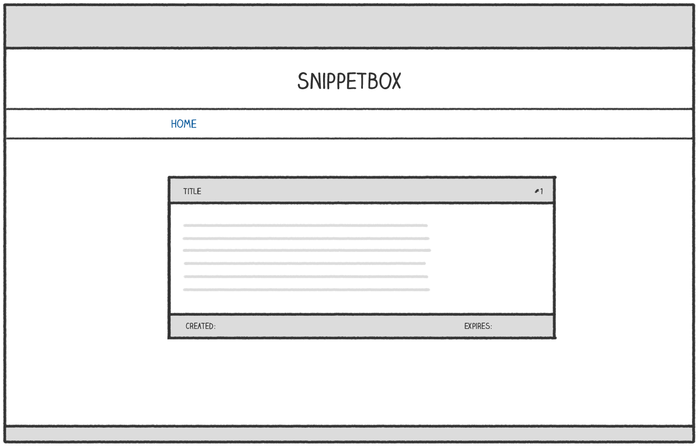

Displaying dynamic data
Currently our snippetView handler function fetches a models.Snippet object from the database and then dumps the contents out in a plain-text HTTP response.
In this section we’ll update this so that the data is displayed in a proper HTML webpage which looks a bit like this:

Let’s start in the snippetView handler and add some code to render a new view.tmpl template file (which we will create in a minute). Hopefully this should look familiar to you from earlier in the book.
package main import ( "errors" "fmt" "html/template" // Uncomment import "net/http" "strconv" "snippetbox.alexedwards.net/internal/models" ) ... func (app *application) snippetView(w http.ResponseWriter, r *http.Request) { id, err := strconv.Atoi(r.URL.Query().Get("id")) if err != nil || id < 1 { app.notFound(w) return } snippet, err := app.snippets.Get(id) if err != nil { if errors.Is(err, models.ErrNoRecord) { app.notFound(w) } else { app.serverError(w, err) } return } // Initialize a slice containing the paths to the view.tmpl file, // plus the base layout and navigation partial that we made earlier. files := []string{ "./ui/html/base.tmpl", "./ui/html/partials/nav.tmpl", "./ui/html/pages/view.tmpl", } // Parse the template files... ts, err := template.ParseFiles(files...) if err != nil { app.serverError(w, err) return } // And then execute them. Notice how we are passing in the snippet // data (a models.Snippet struct) as the final parameter? err = ts.ExecuteTemplate(w, "base", snippet) if err != nil { app.serverError(w, err) } } ...
Next up we need to create the view.tmpl file containing the HTML markup for the page. But before we do, there’s a little theory that I need to explain…
Within your HTML templates, any dynamic data that you pass in is represented by the . character (referred to as dot).
In this specific case, the underlying type of dot will be a models.Snippet struct. When the underlying type of dot is a struct, you can render (or yield) the value of any exported field in your templates by postfixing dot with the field name. So, because our models.Snippet struct has a Title field, we could yield the snippet title by writing {{.Title}} in our templates.
I’ll demonstrate. Create a new file at ui/html/pages/view.tmpl and add the following markup:
$ touch ui/html/pages/view.tmpl
{{define "title"}}Snippet #{{.ID}}{{end}}
{{define "main"}}
<div class='snippet'>
<div class='metadata'>
<strong>{{.Title}}</strong>
<span>#{{.ID}}</span>
</div>
<pre><code>{{.Content}}</code></pre>
<div class='metadata'>
<time>Created: {{.Created}}</time>
<time>Expires: {{.Expires}}</time>
</div>
</div>
{{end}}
If you restart the application and visit http://localhost:4000/snippet/view?id=1 in your browser, you should find that the relevant snippet is fetched from the database, passed to the template, and the content is rendered correctly.
Rendering multiple pieces of data
An important thing to explain is that Go’s html/template package allows you to pass in one — and only one — item of dynamic data when rendering a template. But in a real-world application there are often multiple pieces of dynamic data that you want to display in the same page.
A lightweight and type-safe way to achieve this is to wrap your dynamic data in a struct which acts like a single ‘holding structure’ for your data.
Let’s create a new cmd/web/templates.go file, containing a templateData struct to do exactly that.
$ touch cmd/web/templates.go
package main import "snippetbox.alexedwards.net/internal/models" // Define a templateData type to act as the holding structure for // any dynamic data that we want to pass to our HTML templates. // At the moment it only contains one field, but we'll add more // to it as the build progresses. type templateData struct { Snippet *models.Snippet }
And then let’s update the snippetView handler to use this new struct when executing our templates:
package main ... func (app *application) snippetView(w http.ResponseWriter, r *http.Request) { id, err := strconv.Atoi(r.URL.Query().Get("id")) if err != nil || id < 1 { app.notFound(w) return } snippet, err := app.snippets.Get(id) if err != nil { if errors.Is(err, models.ErrNoRecord) { app.notFound(w) } else { app.serverError(w, err) } return } files := []string{ "./ui/html/base.tmpl", "./ui/html/partials/nav.tmpl", "./ui/html/pages/view.tmpl", } ts, err := template.ParseFiles(files...) if err != nil { app.serverError(w, err) return } // Create an instance of a templateData struct holding the snippet data. data := &templateData{ Snippet: snippet, } // Pass in the templateData struct when executing the template. err = ts.ExecuteTemplate(w, "base", data) if err != nil { app.serverError(w, err) } } ...
So now, our snippet data is contained in a models.Snippet struct within a templateData struct. To yield the data, we need to chain the appropriate field names together like so:
{{define "title"}}Snippet #{{.Snippet.ID}}{{end}}
{{define "main"}}
<div class='snippet'>
<div class='metadata'>
<strong>{{.Snippet.Title}}</strong>
<span>#{{.Snippet.ID}}</span>
</div>
<pre><code>{{.Snippet.Content}}</code></pre>
<div class='metadata'>
<time>Created: {{.Snippet.Created}}</time>
<time>Expires: {{.Snippet.Expires}}</time>
</div>
</div>
{{end}}
Feel free to restart the application and visit http://localhost:4000/snippet/view?id=1 again. You should see the same page rendered in your browser as before.
Additional information
Dynamic content escaping
The html/template package automatically escapes any data that is yielded between {{ }} tags. This behavior is hugely helpful in avoiding cross-site scripting (XSS) attacks, and is the reason that you should use the html/template package instead of the more generic text/template package that Go also provides.
As an example of escaping, if the dynamic data you wanted to yield was:
<span>{{"<script>alert('xss attack')</script>"}}</span>
It would be rendered harmlessly as:
<span><script>alert('xss attack')</script></span>
The html/template package is also smart enough to make escaping context-dependent. It will use the appropriate escape sequences depending on whether the data is rendered in a part of the page that contains HTML, CSS, Javascript or a URI.
Nested templates
It’s really important to note that when you’re invoking one template from another template, dot needs to be explicitly passed or pipelined to the template being invoked. You do this by including it at the end of each {{template}} or {{block}} action, like so:
{{template "main" .}}
{{block "sidebar" .}}{{end}}
As a general rule, my advice is to get into the habit of always pipelining dot whenever you invoke a template with the {{template}} or {{block}} actions, unless you have a good reason not to.
Calling methods
If the type that you’re yielding between {{ }} tags has methods defined against it, you can call these methods (so long as they are exported and they return only a single value — or a single value and an error).
For example, if .Snippet.Created has the underlying type time.Time (which it does) you could render the name of the weekday by calling its Weekday() method like so:
<span>{{.Snippet.Created.Weekday}}</span>
You can also pass parameters to methods. For example, you could use the AddDate() method to add six months to a time like so:
<span>{{.Snippet.Created.AddDate 0 6 0}}</span>
Notice that this is different syntax to calling functions in Go — the parameters are not surrounded by parentheses and are separated by a single space character, not a comma.
Html comments
Finally, the html/template package always strips out any HTML comments you include in your templates, including any conditional comments.
The reason for this is to help avoid XSS attacks when rendering dynamic content. Allowing conditional comments would mean that Go isn’t always able to anticipate how a browser will interpret the markup in a page, and therefore it wouldn’t necessarily be able to escape everything appropriately. To solve this, Go simply strips out all HTML comments.